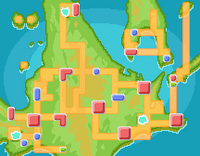

A região de Sinnoh é o cenário principal dos jogos Pokémon Diamond, Pearl e Platinum, localizada em uma área inspirada em Hokkaido, no Japão. Sinnoh se destaca por seu clima frio, montanhas imponentes, lagos extensos e cidades modernas, oferecendo aos jogadores uma combinação de natureza e tecnologia que torna a exploração da região única. O jogador começa sua jornada em Twinleaf Town, recebendo seu primeiro Pokémon do Professor Rowan — Turtwig, Chimchar ou Piplup — que define a estratégia inicial para enfrentar os ginásios e adversários. Twinleaf Town serve como ponto de introdução à captura, batalhas e mecânicas evolutivas avançadas, presentes nesta geração. Sinnoh possui cidades e ginásios memoráveis, como Oreburgh City, lar de Roark, líder de Pokémon do tipo Pedra; Eterna City, com o ginásio de Gardenia, especialista em Pokémon do tipo Planta; e Hearthome City, onde se encontra Fantina, líder do tipo Fantasma, e o Battle Tower, um local opcional de desafios avançados. Cada cidade combina desafios estratégicos com narrativa envolvente.
